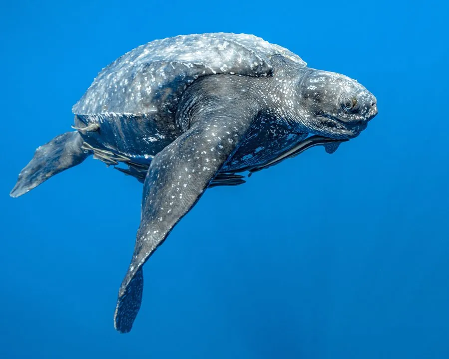

爬行动物 · 动物界
棱皮龟 Dermochelys coriacea

世界上体型最大的海龟，背甲由革质皮肤覆盖并具纵向棱脊，以水母为主食，已被列为国家一级保护动物。
- 分类
- 门脊索动物门纲爬行纲目龟鳖目科棱皮龟科属棱皮龟属
- 栖息环境
- 全球热带、亚热带与温带的开阔海域与近岸水域
- 地理分布
- 全球各大洋，中国南海、东海及沿海偶有记录
- 保护级别
- IUCN 易危（VU）；中国国家一级保护动物；CITES 附录 I
物种志
棱皮龟体长可达 2–3 米，体重 250–700 千克，个别记录超过 900 千克，是现存最大的海龟。它没有坚硬的角质盾片，背甲由黑色革质皮肤覆盖，表面有 7 条纵向棱脊，棱脊之间呈蓝黑色，缀有白色或淡色斑点；四肢特化成巨大的桨状，前肢尤其发达。
它广泛分布于全球热带、亚热带和温带海域，是最能适应寒冷水域的海龟，能潜入数百米深的海中捕食水母，也吃海鞘和鱼卵。雌龟每 2–3 年产卵一次，每窝约 80–100 枚，孵化期 55–70 天，幼龟出壳后自行入海。由于渔网误捕、塑料垃圾被误食（塑料袋酷似水母）、沙滩开发和盗猎龟卵，棱皮龟种群数量急剧下降，被列为易危物种，中国将其列为国家一级保护动物。
形态与习性
- 食性以水母为主，也吃海鞘和鱼卵
- 体长可达 2–3 m
- 体重约 250–700 kg，最大记录超 900 kg
- 寿命约 30–50 年
- 繁殖卵生，每窝约 80–100 枚，孵化 55–70 天
- 活动节律昼夜均活动，可潜入数百米深水
- 保护国家一级保护动物，CITES 附录 I
趣味知识
- 棱皮龟是现存最大的海龟，背甲没有骨质盾片，而是覆盖革质皮肤和 7 条棱脊。
- 它常把漂浮的塑料袋误认为水母吞下，塑料垃圾是其主要威胁之一。
- 棱皮龟能深入冷水海域活动，是分布最广、最耐寒的海龟。